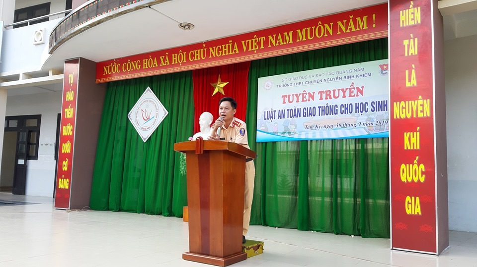
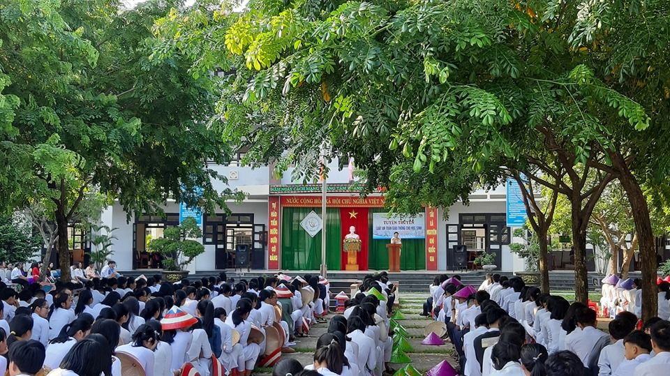
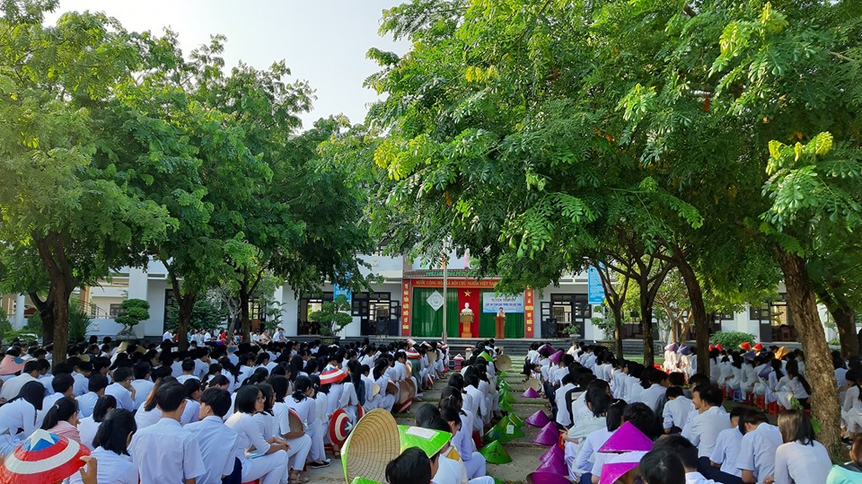
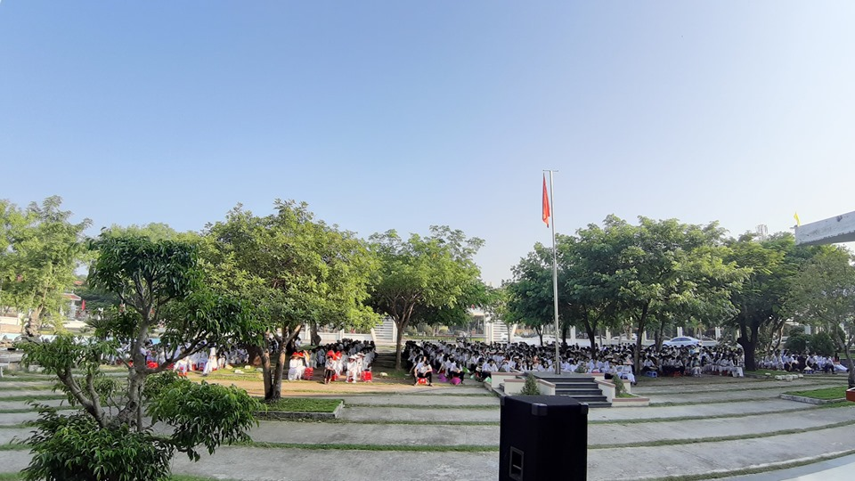
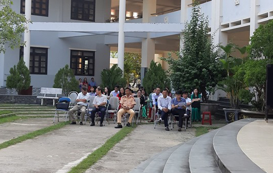

Tuyên truyền luật an toàn giao thông cho học sinh năm học 2019-2020

Lần cập nhật cuối lúc Thứ tư, 02 Tháng 10 2019 14:14 Viết bởi Administrator Thứ ba, 01 Tháng 10 2019 09:10
Sáng ngày 30/9 trong buổi sinh hoạt chào cờ đầu tuần Đoàn trường THPT chuyên Nguyễn Bỉnh Khiêm phối hợp với Phòng Cảnh sát giao thông thành phố Tam Kỳ tổ chức tuyên truyền luật an toàn giao thông cho học sinh nhà trường.

Trong buổi tuyên truyền này Phòng CSGT thành phố Tam Kỳ phổ biến về Luật giao thông đường bộ và thông tin về tình hình giao thông trên địa bàn TP trong năm 2019 cho học sinh toàn trường.




Tin mới hơn:
- 02/12/2019 09:37 - Cuộc thi trực tuyến tìm hiểu về Đảng Cộng sản Việt…
- 28/11/2019 08:16 - Kế hoạch ôn tập và kiểm tra học kỳ 1 năm học 2019 …
- 25/11/2019 09:26 - Cuộc thi tìm hiểu lịch sử văn hóa dân tộc Tự hào V…
- 23/10/2019 16:23 - Thông báo kết quả xếp giải Kỳ thi HSG cấp tỉnh THP…
- 10/10/2019 08:39 - Hứa Nhật Minh đăng quang vô địch Học trò xứ Quảng …
Tin cũ hơn:
- 06/09/2019 15:29 - Trường THPT chuyên Nguyễn Bỉnh Khiêm khai giảng nă…
- 06/09/2019 15:23 - Tuyên truyền pháp luật cho học sinh Trường THPT ch…
- 21/08/2019 16:34 - Kế hoạch tổ chức Tuần sinh hoạt tập thể đầu năm họ…
- 21/08/2019 09:23 - Thông báo thời gian và quy định đi nhận Học bổng V…
- 09/08/2019 08:46 - Triển khai Cuộc thi ý tưởng khởi nghiệp năm 2019